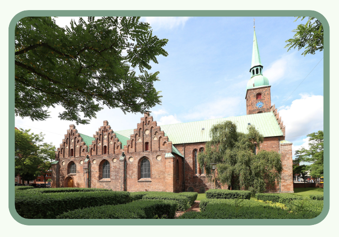
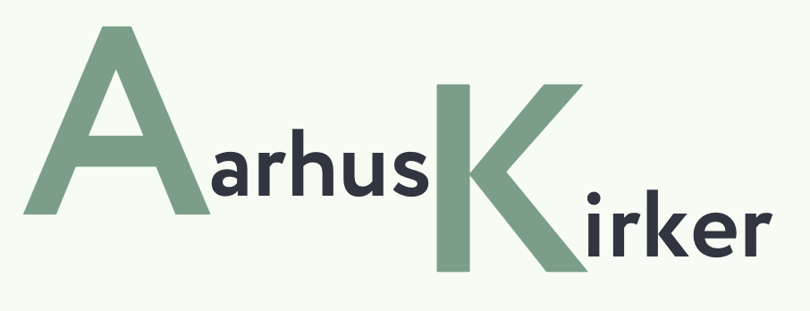
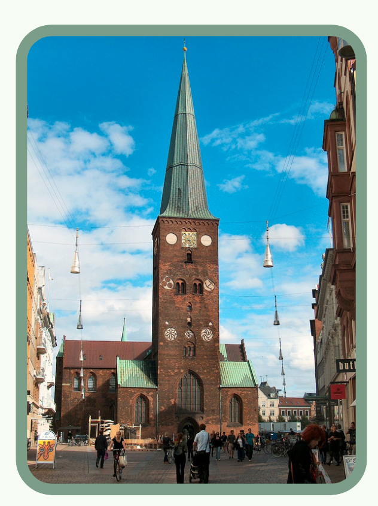
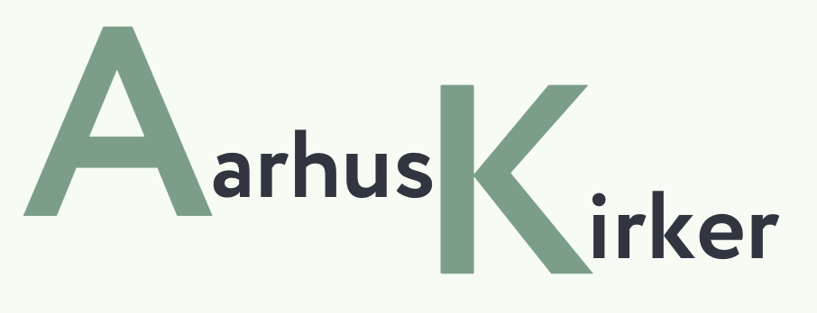
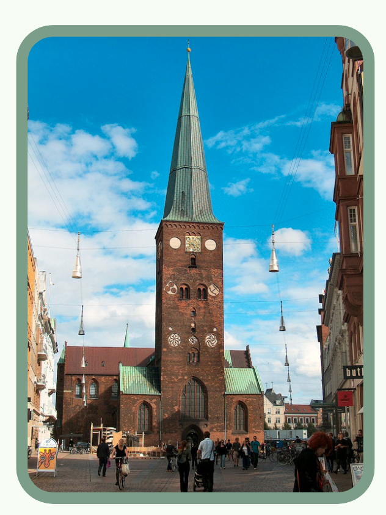
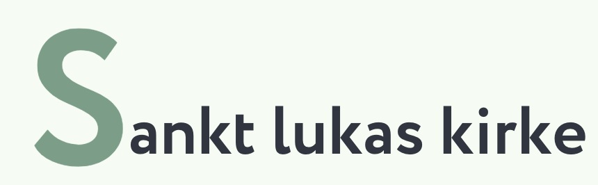
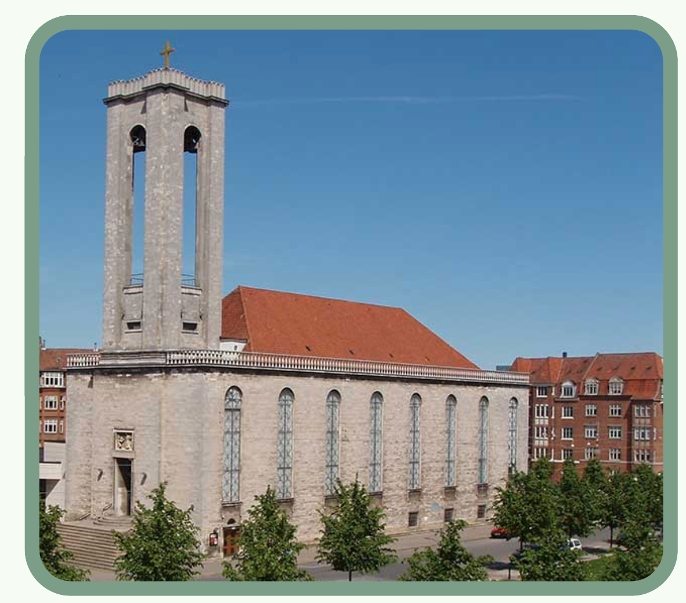
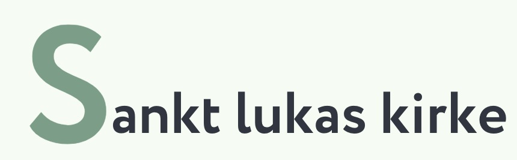
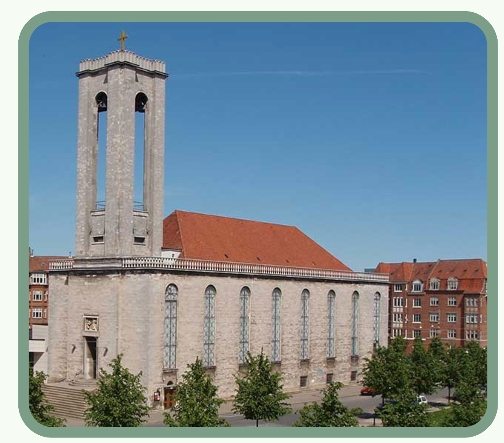

I 1190 blev Aarhus domkirke grundlagt, og er derfor en af Aarhus ældste kirker.
Den er bygget i gotisk stil i 1400-tallet efter den brændte i 1330, indtil da
var den bygget i romansk stil. Den har været under ombygning en del gange
siden da og udvidet og er nu Danmark længste kirke på over 93 meter. Kirken blev
i starten dedikeret til Sankt Clemens, som er søfarers skytsengel. I dag fungere
kirken som sognekirke for Aarhus indbyggere, der er jævnligt gudstjenester og
kulturelle begivenheder. Om sommeren kan man komme op i klokketårnet,
så det er et klart besøg værd.

Vor frue kirke har ligget der før 1060 og blev bygget som en kryptkirke. Det er en
romansk kirke og er helt usædvanlig da det er en er under jorden og er et af
Skandinaviens ældsbevarede kirker. Den blev genopdaget i 1950’erne.
Over kryptkirken ligger middelalderkirken som blev bygget i begyndelsen af
1200-tallet. I starten var det et kloster men blev senere blev det
lukket i 1536 pga. reformationen, men forblev sognekirke. Den gotiske arkitektur
kan ses ved de høje hvælvinger, spidse buer og slanke søjler.
Hovedkirken som man ser i dag, er også bygget i gotisk arkitektur, den er blevet
udvidet og ombygget flere gange gennem årene. Kirken i dag bliver brugt som
sognekirke for den katolske menighed i Aarhus.
Sankt Lukas kirke er en af de nyere kirker i Aarhus, da den blev bygget i 1926.
Den ligger i bydelen Frederiksberg. Krikken er tegnet i en nyklassicistisk
stil af de to arkitekter Anton Frederiksen og Kaj Gottlob, den blev bygget
for den voksende befolkning i den bydel. Kirken blev opkaldt efter evangelisten
Lukas. I dag bliver kirken brugt som en sognekirke
 



 


